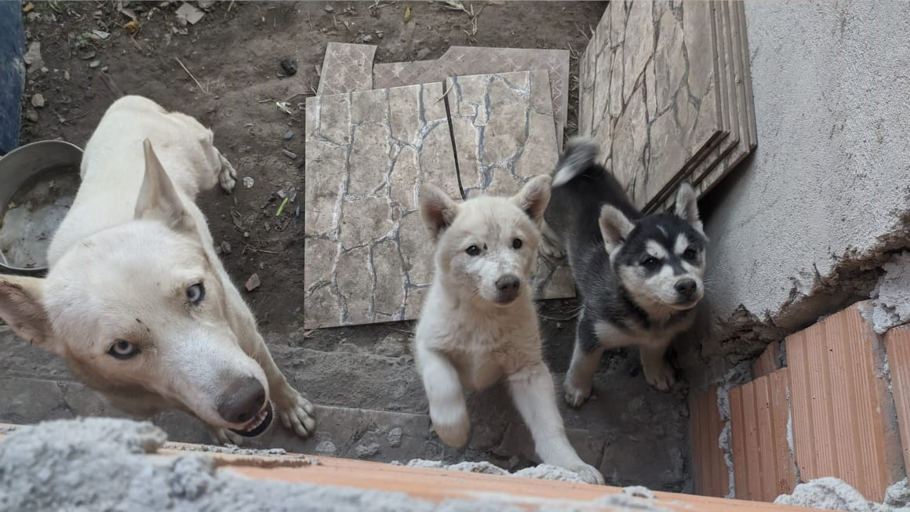

Resgatamos de adultos a filhotes, gatos e cachorros de todas as raçãs.
Quem somos
O abrigo Acolhimento Feliz é uma instiruição filantrópica em Minas Gerais, com o objetivo de resgatar, cuidar, tratar e fazer a ligação da doação de animais abandonados ou necessitados. Criando uma nova esperança para esses inoscentes cheios de amor.
Luna, uma gatinha castrada e muito calma, xodó do nosso abrigo
Esse é o Leo, um cachorrinho dócil esperando por uma familia
Esses gatos são irmãos, resgatamos a mamãe deles prenha porém estava muito debilitada e veio a falecer no parto
Rua Josefina Guimarães Vieira- Bairro Jardim Felicidade